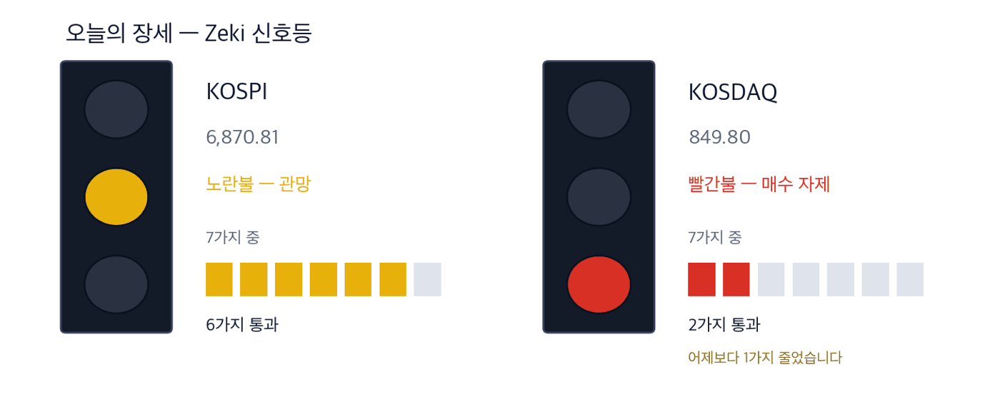

뉴욕증시는 29일 S&P 500이 7,671.19로 0.16% 내렸습니다. 이틀 연속 하락입니다.
코스피 6,870.81 -0.27% | 코스닥 849.80 +0.38% | 제키 신호등 노란불 |

초록불은 매수 우위, 노란불은 관망, 빨간불은 매수 자제입니다. 칸은 7가지 조건 중 몇 가지를 만족하는지이고, 많을수록 오르는 종목이 넓게 퍼져 있습니다. 29일 종가 기준 코스피는 7가지 가운데 6가지를 만족해 노란불입니다. 코스닥은 2가지로 빨간불이며, 전날보다 1가지 줄었습니다.
대기 — 신호등이 뜻하는 자세입니다.
연휴 뒤 이틀 동안 코스피가 내렸습니다. 28일 2.70% 내렸고, 29일에도 0.27% 내려 6,870.81에 마감했습니다. 코스닥은 29일 0.38% 올랐습니다.
지수 아래에서는 돈이 한 업종으로 몰렸습니다. 29일 반도체 업종을 따르는 KRX 반도체지수는 3.83% 올랐습니다(한국경제 집계). 같은 날 DB하이텍은 12.98%, 주성엔지니어링은 7.45% 올랐습니다. 삼성 6개사가 미국 인공지능 인프라 기업에 1조4000억원을 넣는다고 발표한 날이기도 합니다.
① 삼성 6개사가 미국 헬릭스에 10억달러를 넣습니다. 삼성전자가 절반인 5억달러를 냅니다. (한국경제·매일경제 9/30자) 같은 흐름에서 가온전선은 미국 송전 설비 투자를 발표했고, 29일 5.53% 올랐습니다.
② 반도체 소부장을 산 곳은 외국인이 아니라 자산운용사 창구입니다. 반도체 ETF가 9월 초 비중을 다시 짜며 DB하이텍·주성엔지니어링·이오테크닉스를 늘렸습니다. DB하이텍은 20거래일 동안 51.1% 올랐고, 그사이 외국인은 2,585,023주를 순매도했습니다.
③ 방산은 기사와 주가가 엇갈립니다. 5대 무기의 누적 수출 계약이 65조원을 넘었습니다. 그러나 한화에어로스페이스는 20거래일 동안 11.8% 내렸고, 방산 4종목 모두 추세 지표가 0 아래입니다. 10월 2일 공대공 미사일 발표를 먼저 봅니다.
한국경제(9/30자) 집계로 4분기에 만기가 돌아오는 은행채·여전채는 89조5000억원입니다. 1년 전보다 26.4% 많습니다. 5년물 은행채(AAA) 금리는 연 4.6%대로 2023년 10월 이후 가장 높습니다. 은행이 빚을 갚으려 새 채권을 찍을수록 주택담보대출 금리가 더 오를 수 있습니다.
| 날짜 | 무엇을 보는가 | 시장에 어떤 영향 |
|---|---|---|
| 10월 2일(금) | 장거리 공대공 미사일 우선협상대상자 선정 (매일경제 9/30자) | 1조9000억원 사업입니다. 한화에어로스페이스와 현대로템·LIG 연합 가운데 한쪽 값이 먼저 움직입니다 |
| 10월 5일(월) | 개천절 대체공휴일로 휴장 | 금요일 뒤 사흘 쉽니다. 그사이 미국 장 결과는 6일 개장 때 한꺼번에 들어옵니다 |
한국경제(9/30자)에 따르면 삼성전자·삼성물산·삼성SDS·삼성SDI·삼성생명·삼성화재가 미국 헬릭스에 10억달러(약 1조4000억원)를 넣습니다. 헬릭스는 KKR이 6월 세운 회사로, 데이터센터와 발전·송배전·광통신망을 묶어 짓습니다. 엔비디아와 미국 전력회사 비스트라도 함께 출자했습니다.
데이터센터가 늘면 전기를 나를 선이 모자랍니다. 미국 전력회사들이 잡은 송전망 투자는 2025년부터 4년 동안 1780억달러입니다. 가온전선은 29일 미국 법인의 송전용 가공선 설비 투자를 발표했습니다. (매일경제 9/30자)
| 종가 | 당일 | 한 주 | 20거래일 |
|---|---|---|---|
| 315,000원 | +5.53% | -2.17% | +54.41% |
| 3개월 | 제키 강도 | 고점 대비 |
|---|---|---|
| +72.30% | 99 | -10.73% |
| 누가 | 가온전선, LS그룹의 전선 회사입니다. |
| 무엇을 | 미국 법인 LSCUS가 송전용 가공선 생산 설비에 투자한다고 발표했습니다. 배전에 머물던 미국 사업을 송전으로 넓힙니다. |
| 언제 | 29일 발표 날 5.53% 올라 315,000원에 마감했습니다. |
| 어디서 | 유가증권시장에 상장돼 있습니다. 하루 거래대금은 약 1,058억원입니다. |
| 왜 | 미국 전력회사들의 송전망 투자가 4년 동안 1780억달러로 잡혀 있기 때문입니다. |
| 어떻게 | 같은 미국 고객에게 배전 케이블에 이어 송전선까지 팔면 한 고객에게서 나오는 매출이 커집니다. |
| 종가 | 당일 | 한 주 | 20거래일 |
|---|---|---|---|
| 275,000원 | +1.85% | +5.77% | +7.00% |
| 3개월 | 제키 강도 | 고점 대비 |
|---|---|---|
| -19.00% | 92 | -26.57% |
| 누가 | 삼성전자, 헬릭스 투자 10억달러 가운데 5억달러를 내는 곳입니다. |
| 무엇을 | 20거래일 동안 기관이 10,656,914주를 순매수했고, 외국인은 16,220,800주를 순매도했습니다. |
| 언제 | 투자를 발표한 29일 1.85% 올랐습니다. |
| 어디서 | 유가증권시장에 상장돼 있습니다. 하루 거래대금은 약 4조4544억원입니다. |
| 왜 | 데이터센터에 반도체만 대던 회사가 냉난방공조 설비까지 함께 팔 수 있기 때문입니다. 지난해 독일 플랙트를 인수했습니다. |
| 어떻게 | 부품 공급을 넘어 데이터센터 구축 전체에서 매출이 나오면 반도체 경기에 덜 흔들립니다. |
한국경제(9/30자)는 코스피가 9월 내내 7000선 부근을 오가는 동안 주가를 정한 것이 자산운용사 창구였다고 짚었습니다. 반도체 ETF 3개의 운용자산은 8조3348억원입니다. 9월 초 이들 ETF가 늘린 종목은 DB하이텍·이오테크닉스·주성엔지니어링·삼성전기·한미반도체 5곳입니다. 대신 한 종목 한도인 20%를 넘은 삼성전자·SK하이닉스는 줄였습니다.
외국인은 9월 코스닥에서 이오테크닉스를 1600억원어치 순매도했습니다. 그 물량을 자산운용사 창구가 받았고, 주가는 9월에 25.63% 올랐습니다. ETF에 돈이 들어오는 동안은 ETF 안 비중만큼 매수가 이어집니다. 들어오는 돈이 멈추면 반대가 됩니다.
| 종가 | 당일 | 한 주 | 20거래일 |
|---|---|---|---|
| 141,900원 | +12.98% | +12.71% | +51.12% |
| 3개월 | 제키 강도 | 고점 대비 |
|---|---|---|
| -10.36% | 90 | -38.44% |
| 누가 | DB하이텍, 반도체 위탁생산 회사입니다. |
| 무엇을 | 반도체 ETF가 비중을 늘린 5종목 가운데 9월 상승 폭이 47.98%로 가장 컸습니다. |
| 언제 | 29일 12.98% 올라 141,900원에 마감했습니다. 거래량은 50일 평균의 2.1배였습니다. |
| 어디서 | 유가증권시장에 상장돼 있습니다. 하루 거래대금은 약 923억원입니다. |
| 왜 | 반도체 ETF 안에서 이 종목 비중이 커져 ETF로 들어오는 돈이 이 종목 매수로 이어지기 때문입니다. |
| 어떻게 | 20거래일 동안 기관이 1,923,069주를 사고 외국인이 2,585,023주를 팔았습니다. 한쪽의 매도를 다른 쪽이 받는 구도입니다. |
| 종가 | 당일 | 한 주 | 20거래일 |
|---|---|---|---|
| 223,500원 | +7.45% | +9.29% | +26.41% |
| 3개월 | 제키 강도 | 고점 대비 |
|---|---|---|
| +34.96% | 99 | -21.02% |
| 누가 | 주성엔지니어링, 반도체 증착 장비 회사입니다. |
| 무엇을 | 반도체 ETF가 9월 초 비중을 크게 늘린 종목입니다. |
| 언제 | 29일 7.45% 올라 223,500원에 마감했습니다. |
| 어디서 | 코스닥에 상장돼 있습니다. 하루 거래대금은 약 1,977억원입니다. |
| 왜 | ETF 안 비중이 커진 데다 3개월 상승률이 오늘 실은 소부장 3종목 가운데 가장 높기 때문입니다. |
| 어떻게 | 20거래일 동안 외국인 399,819주, 기관 731,842주가 함께 순매수했습니다. |
| 종가 | 당일 | 한 주 | 20거래일 |
|---|---|---|---|
| 502,000원 | +7.38% | +10.94% | +25.97% |
| 3개월 | 제키 강도 | 고점 대비 |
|---|---|---|
| +3.51% | 84 | -19.42% |
| 누가 | 이오테크닉스, 반도체 레이저 장비 회사입니다. |
| 무엇을 | 외국인이 9월 코스닥에서 1600억원어치를 팔았는데, 자산운용사 창구가 받아 주가가 25.63% 올랐습니다. |
| 언제 | 29일 7.38% 올라 502,000원에 마감했습니다. |
| 어디서 | 코스닥에 상장돼 있습니다. 하루 거래대금은 약 393억원입니다. |
| 왜 | ETF 비중이 늘어 ETF로 들어오는 돈이 곧 이 종목 매수가 되기 때문입니다. |
| 어떻게 | 20거래일 동안 기관이 393,314주를 사고 외국인이 321,368주를 팔았습니다. |
한국경제(9/30자)에 따르면 K-9 자주포·K-2 전차·천무·천궁-Ⅱ·FA-50 5대 무기의 누적 수출 계약이 65조원을 넘었습니다. 방산업체들은 20여 곳에서 공장을 늘리고 있습니다. 10월 2일에는 1조9000억원 규모 장거리 공대공 미사일 사업의 우선협상대상자가 가려집니다. (매일경제 9/30자)
그러나 값은 반대로 갔습니다. 20거래일 동안 한화에어로스페이스 -11.8%, 현대로템 -19.2%, LIG디펜스앤에어로스페이스 -7.2%, 한화시스템 -4.9%입니다. 4종목 모두 추세 지표가 0 아래이고, 현대로템은 1년 최고가보다 60.1% 낮습니다. 10월 2일 결과가 나온 뒤 추세가 돌아서는지 봅니다.
같은 이유로 뺀 것 하나 더 — 한미반도체입니다. 반도체 ETF가 비중을 늘린 종목이고 29일 8.15% 올랐습니다. 그러나 추세 지표가 아직 0 아래(가격의 -0.21%)입니다. 한국경제는 이 종목을 공매도 잔액 비중이 가장 높은 곳으로 꼽았습니다.
| 종목 | ①20거래일 상승 | ②강도 90↑ | ③외국인 순매수 | ④기관 순매수 | 충족 | 근거의 무게 |
|---|---|---|---|---|---|---|
| 가온전선(000500) | O | O | O | O | 4/4 | 근거 확실 |
| 삼성전자(005930) | O | O | X | O | 3/4 | 근거 있음 |
| DB하이텍(000990) | O | O | X | O | 3/4 | 근거 있음 |
| 주성엔지니어링(036930) | O | O | O | O | 4/4 | 근거 확실 |
| 이오테크닉스(039030) | O | X | X | O | 2/4 | 확인 필요 |
네 칸은 ①20거래일 동안 올랐는가 ②제키 강도가 90 이상인가 ③외국인이 20거래일 순매수했는가 ④기관이 20거래일 순매수했는가입니다. O의 개수가 근거의 무게를 정합니다.
| 종목 | 외국인 · 기관 20거래일 | 거래량 | 어떻게 읽나 |
|---|---|---|---|
| SFA반도체 036540 | 외 +12.4 · 기 -2.7 | 3.55배 | 주의 — 외국인만 사고 다른 쪽은 팔았습니다 |
| 포스코인터내셔널 047050 | 외 -1.7 · 기 +18.6 | 0.35배 | 주의 — 기관만 사고 다른 쪽은 팔았습니다 |
| 포스코DX 022100 | 외 -1.0 · 기 +9.8 | 0.25배 | 주의 — 기관만 사고 다른 쪽은 팔았습니다 |
| 대한항공 003490 | 외 +9.8 · 기 +2.5 | 1.29배 | 관심✓ — 외국인·기관이 함께 샀고 거래도 늘었습니다 |
| 우리금융지주 316140 | 외 +14.5 · 기 +2.8 | 0.55배 | 확인✓ — 함께 샀지만 거래가 얕습니다 |
| 대우건설 047040 | 외 -7.2 · 기 -4.5 | 1.37배 | 주의 — 둘 다 파는데 물량이 늘었습니다 |
| 두산에너빌리티 034020 | 외 -7.7 · 기 -0.9 | 0.94배 | 관망 — 둘 다 팔지만 거래가 말랐습니다 |
| LG디스플레이 034220 | 외 -11.5 · 기 -0.2 | 0.70배 | 관망 — 둘 다 팔지만 거래가 말랐습니다 |
| SK하이닉스 000660 | 외 -6.5 · 기 -0.6 | 0.62배 | 관망 — 둘 다 팔지만 거래가 말랐습니다 |
| 넷마블 251270 | 외 -11.2 · 기 -0.2 | 0.29배 | 관망 — 둘 다 팔지만 거래가 말랐습니다 |
| 종목 | 20일 동안 더 산 양(주) | Zeki 강도 | 20거래일 등락 | 기준일 |
|---|---|---|---|---|
| 우리금융지주 316140 | +14,452,372 | 75 | +6.9% | 09-29 |
| SFA반도체 036540 | +12,359,578 | 94 | +91.3% | 09-29 |
| 대한항공 003490 | +9,795,707 | 74 | +9.9% | 09-29 |
| 고영 098460 | +2,746,141 | 76 | +7.3% | 09-29 |
| 현대무벡스 319400 | +2,433,388 | 76 | -13.7% | 09-29 |
| 종목 | 20일 동안 더 산 양(주) | Zeki 강도 | 20거래일 등락 | 기준일 |
|---|---|---|---|---|
| 삼성전자 005930 | -16,220,800 | 92 | +7.0% | 09-29 |
| LG디스플레이 034220 | -11,494,535 | 8 | -13.6% | 09-29 |
| 넷마블 251270 | -11,216,130 | 12 | -7.6% | 09-29 |
| 두산에너빌리티 034020 | -7,690,103 | 48 | -8.7% | 09-29 |
| 대우건설 047040 | -7,182,434 | 96 | -10.4% | 09-29 |
| 종목 | 20일 동안 더 산 양(주) | Zeki 강도 | 20거래일 등락 | 기준일 |
|---|---|---|---|---|
| 포스코인터내셔널 047050 | +18,566,757 | 53 | +3.8% | 09-29 |
| 삼성전자 005930 | +10,656,914 | 92 | +7.0% | 09-29 |
| 포스코DX 022100 | +9,824,281 | 19 | -7.1% | 09-29 |
| 맥쿼리인프라 088980 | +5,030,401 | 25 | -0.8% | 09-29 |
| BNK금융지주 138930 | +3,372,984 | 45 | +9.1% | 09-29 |
| 종목 | 20일 동안 더 산 양(주) | Zeki 강도 | 20거래일 등락 | 기준일 |
|---|---|---|---|---|
| 대우건설 047040 | -4,528,565 | 96 | -10.4% | 09-29 |
| 고영 098460 | -2,909,937 | 76 | +7.3% | 09-29 |
| SFA반도체 036540 | -2,671,838 | 94 | +91.3% | 09-29 |
| 미래에셋증권 006800 | -2,344,388 | 41 | -13.8% | 09-29 |
| 와이씨 232140 | -2,058,071 | 53 | +26.9% | 09-29 |
기사와 값이 맞아도 자금은 따로 봅니다. 아래 표는 29일 거래량이 넘어야 할 거래량(50일 평균)을 실제로 넘었는지를 답합니다.
| 종목 | 넘었나 | 수급(9월 29일까지) | 어떻게 읽나 |
|---|---|---|---|
| 가온전선(000500) | 0.55배 ✗ | 외 매수 · 기 매수 | 확인 — 함께 샀지만 거래가 얕습니다 |
| 삼성전자(005930) | 0.66배 ✗ | 외 매도 · 기 매수 | 주의 — 기관만 사고 다른 쪽은 팔았습니다 |
| DB하이텍(000990) | 2.10배 ✓ | 외 매도 · 기 매수 | 주의 — 기관만 사고 다른 쪽은 팔았습니다 |
| 주성엔지니어링(036930) | 0.77배 ✗ | 외 매수 · 기 매수 | 확인 — 함께 샀지만 거래가 얕습니다 |
| 이오테크닉스(039030) | 0.90배 ✗ | 외 매도 · 기 매수 | 주의 — 기관만 사고 다른 쪽은 팔았습니다 |
「넘었나」는 29일 거래량을 50일 평균으로 나눈 값이며, 1배를 넘으면 ✓입니다. 칸의 말은 저희 매매를 뜻하지 않습니다. 관심은 값과 거래가 같은 쪽이라는 뜻이고, 주의는 두 주체가 갈렸거나 함께 팔았다는 뜻입니다. 확인은 함께 샀지만 거래가 얕다는 뜻이고, 관망은 거래가 적었다는 뜻입니다.
| 근거의 무게 | 종목 | KOSPI를 이긴 수 | 지수를 웃돈 폭 | 지수를 밑돈 폭 | 전부 평균 |
|---|---|---|---|---|---|
| 근거 확실 | 16 | 13 / 16 | +9.58%p | -4.53%p | +6.94%p |
| 근거 있음 | 16 | 8 / 16 | +7.63%p | -4.90%p | +1.37%p |
| 확인 필요 | 35 | 17 / 35 | +5.82%p | -5.39%p | +0.05%p |
| 근거 약함 | 1 | 1 / 1 | +4.70%p | 없음 | +4.70%p |
| 근거 없음 | 2 | 0 / 2 | 없음 | -6.01%p | -6.01%p |
| 테마 제외 | 1 | 1 / 1 | +9.09%p | 없음 | +9.09%p |
| 근거 확실 16 | +6.94%p | ||||||
| 근거 있음 16 | +1.37%p | ||||||
| 확인 필요 35 | +0.05%p | ||||||
| 근거 약함 1 | +4.70%p | ||||||
| 근거 없음 2 | −6.01%p | ||||||
| 테마 제외 1 | +9.09%p |
가운데 선이 KOSPI입니다. 오른쪽이 웃돈 것, 왼쪽이 밑돈 것입니다. 이름 옆 회색 숫자는 그 칸의 종목 수입니다.
근거 확실 16종목 가운데 13종목이 KOSPI를 이겼습니다. 이긴 13종목은 평균 9.6%p 웃돌았고, 진 3종목은 평균 4.5%p 밑돌았습니다. 전부 합치면 지수보다 +6.9%p 입니다.
판정 진행. 두 시장 합쳐 5거래일(한 주)이 찬 것 24건 / 필요 60건. 60건이 차면 미리 정해 둔 방식으로 한 번 판정하고 그 결과를 그대로 싣습니다. 그때까지 위 숫자는 중간 경과입니다.
| 언제 | 무엇을 보는가 | 무엇을 뜻하는가 |
|---|---|---|
| 개장 30분(09:00~09:30) | DB하이텍이 29일 종가 141,900원 위에서 출발하는가 | 29일 크게 오른 값이 하루 만에 꺼지는지 드러납니다 |
| 오전 10시 | 코스피가 6,870.81 위를 지키는가 | 29일 종가입니다. 이틀 약세가 사흘로 이어지는지 보여 줍니다 |
| 마감 30분(15:00~15:30) | 가온전선 거래량이 50일 평균 265,428주를 넘는가 | 넘으면 증설 발표 뒤 새 돈이 붙었다는 뜻입니다 |
10월 2일 공대공 미사일 우선협상대상자가 나오면 방산주 추세가 돌아서는지 봅니다. 그날이 사흘 휴장 전 마지막 거래일입니다. 반도체 소부장은 29일 오른 값을 이틀 지키는지, 자산운용사 창구의 매수가 이어지는지 확인합니다.
This is the Rex Way, ZekiRex™